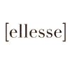

404
Hoppsan, den sidan finns inte
Det verkar som att länken du följde inte leder någonstans. Kanske har sidan flyttats eller stavas fel – men du hittar oss alltid på startsidan.
Tillbaka till startsidan
Det verkar som att länken du följde inte leder någonstans. Kanske har sidan flyttats eller stavas fel – men du hittar oss alltid på startsidan.
Tillbaka till startsidan